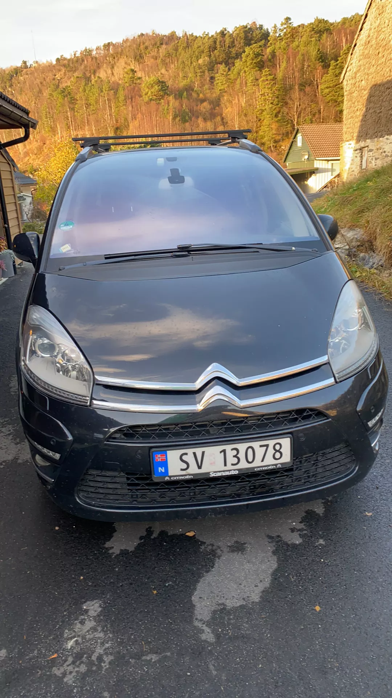

Den har normalt plassen til 632 liter i bagasje rommet, som kan økes til 793 liter. Baksetene har nemlig tre separate seter som kan skyves fram og tilbake. Det betyr at du kan ha tre barneseter. Det er ikke mange biler hvor dette er mulig. C4 Picasso leveres standard med sju seter, så du blir populær på fotballaget til barna også. Når de to bakerste setene ikke er i bruk, felles de enkelt ned i gulvet i bagasjerommet. Et lite speil i taket gjør at du kan se alle barna i baksetet mens du kjører
C4 Picasso fikk fem stjerner og gode poengsummer for sikkerheten til voksne og barn i EuroNCAPs kollisjonstest 2013 Ifølge utstyrslisten har ikke C4 Picasso verken kollisjonsvarsler eller noen form for nødbrems for andre biler eller fotgjengere. Det betyr at den ikke vil kunne få toppkarakter etter dagens strengere EuroNCAP-regler.
Den billigste utgaven av bilen kommer med en dieselmotor på 99 hester og manuelt gir. Prisen er 310.000 kroner ferdig på veien. Det er billig for en så stor og praktisk bil.Testbilen med 130 hesters bensinmotor, automatgir og høyeste utstyrsnivå Exclusive, koster 389.900 kroner. Den gir mye komfort på veien, med myk fjæring på fransk vis og behagelig støynivå i kupeen.Automatgiret bidrar til den komfortable kjørefølelsen. Det samme gjør den dynamiske fartsholderen, som passer avstanden til bilen foran når du kjører på landeveien.Motoren er sterk nok for de fleste anledninger, og fabrikken oppgir et forbruk på bare 0,5 liter på mila. Vi målte 0,69 på en blanding av by- og motorveikjøring på vinterføre i minus fire-fem grader.
